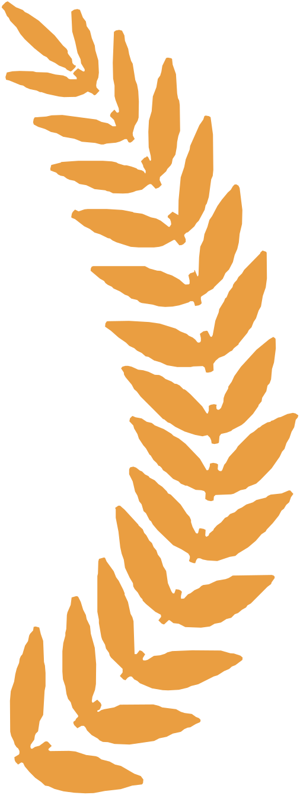

FAS joins sources never designed to work together (the NORAD catalogue, CelesTrak, GCAT, SatNOGS, Launch Library 2 and the space press) and reconciles them in one place.
Together they answer what none can alone. Who owns what on orbit? How are the launch and LEO markets trending? Where is everything? When can I see a given satellite?
Free and not-for-profit, in the spirit of Linux and the Web. For journalists, investors, students, educators and the industry.
Refreshed automatically. Designed for low bandwidth and high latency, from the ISS to Antarctica over Starlink.
